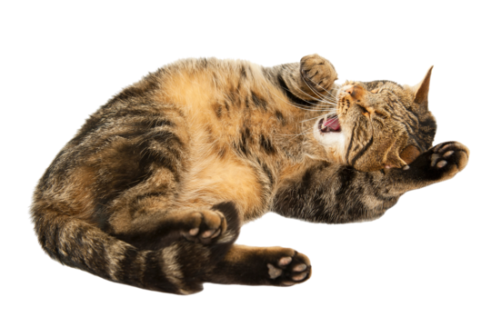
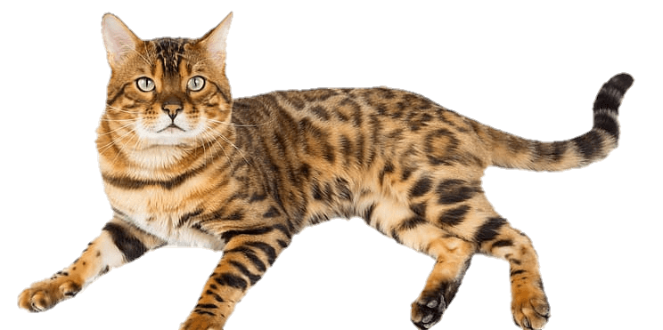

People's best friends
Interesting facts

- Cats are believed to be the only mammals who don’t taste sweetness.
- Cats are nearsighted, but their peripheral vision and night vision are much better than that of humans.
- Cats are supposed to have 18 toes (five toes on each front paw; four toes on each back paw).
- Cats can jump up to six times their length.
- Cats have whiskers on the backs of their front legs, as well.
- Some cats are ambidextrous, but 40 percent are either left- or right-pawed.
- There are cats who have more than 18 toes. These extra-digit felines are referred to as being “polydactyl.” 
- A cat with a question-mark-shaped tail is asking, “Want to play?”
- According to Wilde, a slow blink is a “kitty kiss.” This movement shows contentment and trust.
- Cats have a unique “vocabulary” with their owner — each cat has a different set of vocalizations, purrs and behaviors.
- Cats have up to 100 different vocalizations — dogs only have 10.
- Cats find it threatening when you make direct eye contact with them.
- Meowing is a behavior that cats developed exclusively to communicate with people.
- When a cat flops over and exposes his belly, it’s not always an invitation for a belly rub. A cat does this when he’s relaxed and showing trust.
- When your cat sticks his butt in your face, he is doing so as a gesture of friendship.
- Cats are very fussy about their water bowls; some prefer to ignore their bowls entirely in favor of drinking from the sink faucet.
- Cats groom other cats — and sometimes people — in a ritual called allogrooming.
- Cats like to sleep on things that smell like their owners, such as their pillows and dirty laundry (ick!).
- Cats love to sleep in laundry baskets, too, because they’re basically hiding places with peep holes.
- Cats often attack your ankles when they’re bored.
- Certain cats go crazy for foods you wouldn’t expect, like olives, potato chips, and the hops in beer.
- For some reason, cats really dislike citrus scents. 
- A green cat was born in Denmark in 1995. Some people believe that high levels of copper in the water pipes nearby may have given his fur a verdigris effect.
- It turns out that Abraham Lincoln was a crazy cat president! He had four cats that lived in the White House with him.
- Maria Assunta left her cat, Tomasso, her entire $13 million fortune when she died in 2011.
- President Bill Clinton’s cat, Socks, was a media darling during the Clinton administration and was said to receive more letters than the President himself.
- Stubbs, a 17-year-old orange tabby, is mayor of the historic district of Talkeetna, Alaska.

About Cat Anatomy & Physiology
Facts About Cat Communication Cues

Facts About Quirky Cat Behaviors — And Why They Happen
Facts About Cats Who Made History
Love cats!